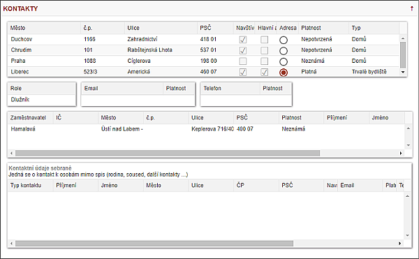

 Tato podzáložka obsahuje všechny kontaktní informace týkající se dlužníka - Adresy, Telefonní čísla, Emaily, Zaměstnavatele a jejich kontaktní osoby.
Dále je podzáložka rozšířena o Kontaktní údaje SEBRANÉ - soused, babička,… Tyto je možné editovat, přidávat a rušit přímo na této podzáložce. Do této tabulky se přidávají informace z procesu Zápis z OSN nebo Dohledané informace. Při zápise v této tabulce jsou data uložena okamžitě po opuštění dialogu.
Zneplatnění lze provádět pouze u emailů a u sebraných kontaktů, vše ostatní se dělá z procesů.
Kontakty bude možné přidat procesem, který se zeptá, zda je třeba ty předchozí zneplatnit a propíše kontakt AUTOMATICKY bez dotazu uživateli ke všem spisům DL.
Pole NAVŠTÍVENO - změna nastavení z procesu dle OSN
Pole HLAVNÍ - změna na základě procesu z OSN či kontaktu s DL Pole PLATNOST - Neověřená /Platná / Neplatná - změna na základě procesu z OSN či kontaktu s DL
Pole TYP - Korespondenční /Fakturační/… uživatel sám může nastavit v procesu z OSN či kontaktu s DL.
Jeden zaměstnavatel může mít několik adres, několik kontaktních osob a každá může mít několik kontaktů. Zneplatnění adresy zaměstnavatele se automaticky zneplatní jeho kontakty. Není vedena historie zaměstnavatelů, pro IP bude zobrazen pouze jeden zaměstnavatel.
Každá adresa má radiobuton s názvem K osobní návštěvě (K OSN), který ukazuje, která adresa DL se automaticky přebere do plánování trasy. Adresu pro OSN lze měnit a vybraná se vždy přednastaví při plánování návštěvy. Nelze mít zaškrtnuty dvě adresy.
Při zaškrtnutí jiné adresy k OSN se automaticky zkontrolují GPS souřadnice. V případě nezjištění se objeví informace o nutnosti ručního zjištění GPS souřadnic. Pro zajištění stejné funkčnosti kdekoliv v programu je v seznamu spisů (v levé části programu) pole s barevnou značkou souřadnice GPS. Kliknutím na toto pole se objeví dialog s adresou, polem se souřadnicemi a mapou, na níž je zobrazen bod dle souřadnic.